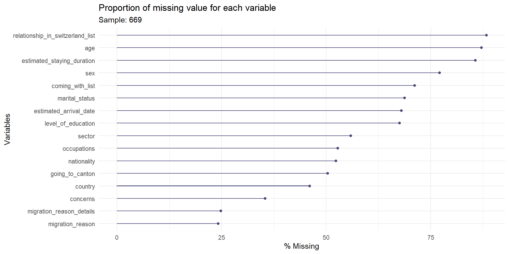
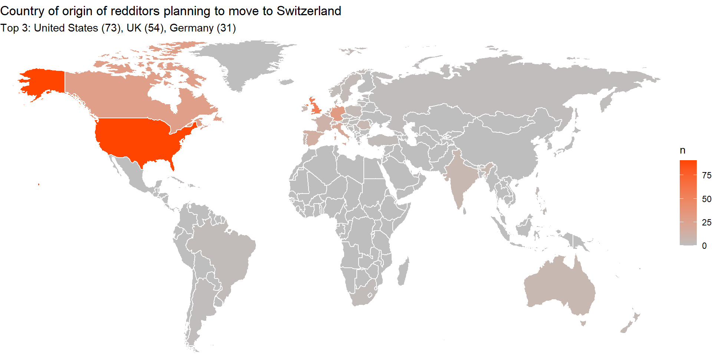

| n | prop | ||
| 1 | Work/Residential Permit | 119 | 20.3% |
| 2 | Cost Of Life In Switzerland | 104 | 17.7% |
| 3 | Speaking Local Language | 96 | 16.4% |
| 4 | Finding Accomodation | 76 | 13.0% |
| 5 | Healthcare System | 42 | 7.2% |
| 6 | Financing The Settlement | 24 | 4.1% |
| 7 | Finding School | 22 | 3.8% |
| 8 | Salary | 22 | 3.8% |
| 9 | Feeling Unwelcomed | 21 | 3.6% |
| 10 | Dealing With Administration | 20 | 3.4% |
| 11 | Financing The Move | 17 | 2.9% |
| 12 | Feeling Lonely | 8 | 1.4% |
| 13 | Politics | 7 | 1.2% |
| 14 | Finding Childcare | 3 | 0.5% |
| 15 | Finding Accommodation | 2 | 0.3% |
| 16 | Tax Reason | 2 | 0.3% |
| 17 | Feeling Homesick | 1 | 0.2% |
Migration Aspiration and Crisis in Redditors’ Trajectory
https://cyuhat.github.io/mobility_intention_reddit
Research question
- Central question:
- How do personal life trajectories and critical events influence individuals’ migration intentions to Switzerland over time?
- Key focus:
- Migration intention over time
- Life course perspective
- Methods (mixed):
- Quantitative: Longitudinal multilevel analysis
- Qualitative: Depend on the trajectories selected
Migration intention
Let’s imagine an individual…

Migration intention
… that want to move to Switzerland

Migration intention
Does the intention to move vary over time?

Migration intention isn’t always predictible
2 years after:
70% indeed emigrated (Wanner, 2021)
24% - 36% indeed emigrated (Van Dalen & Henkens, 2008)
Factors (Bernard & Vidal, 2023; Kulu & Milewski, 2007):
Job opportunities
Birth
Social network
…
Research context
Many factors have an impact in the mobility intention:
- Demographic scope (Findlay et al., 2015):
- Age groups, gender, family statuses, migrant groups, …
- Life course (Horowitz & Entwisle, 2021).:
- Life events (e.g., education, job loss, birth, divorce)
- Linked lives (family/social networks influencing decisions)
- Historical time/place (contextual factors like economic crisis).
- Individual agency (decision-making processes)
- Timing of lives (age-related migration patterns)
- Life events (e.g., education, job loss, birth, divorce)
Research context
- Traditional methods have their limitations
- Quantitatives studies:
- Focus on few specific life events
- Focus on rare Geo-localized data
- Qualitative studies:
- Despite the richness of the analysis
- Usage of small samples
- Quantitatives studies:
- New data sources are available
- Social media data (Sîrbu et al., 2021)
- Big Data
- Textual data + Metadata
- Social media data (Sîrbu et al., 2021)
Methodological innovation
- Why is this study unique in migration research?:
- Longitudinal Data: Tracks individuals’ journeys over 4 years (2 years before/after relocation decisions).
- Mixed Methods: Combines large language models (for data extraction) with longitudinal multilevel regression (for interpretive insights). Then interview will be conducted with a subset of the sample
- Use of Reddit: Captures nuanced, unfiltered narratives from users who express relocation intentions.
- Longitudinal Data: Tracks individuals’ journeys over 4 years (2 years before/after relocation decisions).
https://backlinko.com/reddit-users
What is it?
Social media
Founded in 2005
Community based
Statistics
97.2 million daily active users
+100’000 active subreddits


Adavantages of Reddit
- Longitudinal Tracking:
- Enables analysis of how personal circumstances, policies, and crises (e.g., pandemic) dynamically shape migration decisions.
- Ethical and accessibility benefits:
- Reddit’s anonymity and accessible API for researchers reduce ethical concerns compared to traditional methods (e.g., surveys).
- Novel use of non-official APIs (Application Programming Interface):
- The PullPush API facilitates comprehensive data collection over extended periods.
Key objectives
- Primary goal:
- Map the temporal progression of migration intention using data from Reddit’s r/AskSwitzerland.
- Highlight the impact of Covid-19 in migration intention
- Map the temporal progression of migration intention using data from Reddit’s r/AskSwitzerland.
- Side objectives:
- Show that Reddit data are valuable for migration studies
- Show that local SLMs (Small Language Models) are valuable tools for data extraction
- Show that the Julia programming language is a valuable programming language for social scientists
Method
Data Source: Reddit and r/AskSwitzerland

Data Source: Reddit and r/AskSwitzerland
- Platform Choice:
- Reddit is used as a primary source due to its rich textual data and community-driven discussions about migration.
- The subreddit r/AskSwitzerland is specifically targeted, as it is a hub for users seeking information about living in Switzerland and expressing relocation intentions.
- Reddit is used as a primary source due to its rich textual data and community-driven discussions about migration.
- Non-Official API (PullPush):
- Utilizes the PullPush API to collect longitudinal data, enabling long-term tracking of user behavior and migration intentions.
The full workflow

Data collection
- Three-stage approach:
- Initial collection (2016–2021):
- Posts containing keywords like “Relocation,” “Migration,” “Mobility,” or “Living in Switzerland” are gathered.
- Posts containing keywords like “Relocation,” “Migration,” “Mobility,” or “Living in Switzerland” are gathered.
- Filtering:
- Posts are filtered to retain only those expressing genuine intent to move to Switzerland.
- Posts are filtered to retain only those expressing genuine intent to move to Switzerland.
- Saving user name:
- A list of user name is saved in a database.
- Initial collection (2016–2021):
Data extraction
- Three-stage approach:
- Users’ comment history (2nd data collection):
- Collecting user’s comment history 2 years before and after the migration intention
- Removing people who posted only once (current sample size: 669)
- Monthly comment aggregation:
- The time unit is monthly so the comment are joined this way
- SLMs data extraction:
- Using a small language model, specific information will be extracted
Data extraction
Using a Large Language Model (LLM) or a Small Language Model (SLM)?

https://www.techradar.com/computing/artificial-intelligence/best-llms
Data extraction
LLMs have many use cases… data extraction is one of them!

Data extraction
From unstructured text to JSON format (LLMs are good for that!)
“Hey everyone, I (f28) and my husband (h28) have been dreaming of moving to Switzerland because I’ve received an exciting job offer from a tech company based there. The role involves developing innovative software solutions and working with a talented team, which aligns perfectly with my career goals.”
Data extraction
Some advanced prompting is needed:
- Role given to the model: Labeling Expert
- Detailed description of variables we are looking for
- Restricted value list per variable given
- A few shots example (questions and expected answers) to guide the model
Result
- +100 lines long prompt with 3 examples
Data extraction
The full prompt:
/nothink You are a labeling expert specialized in extracting data from Reddit
posts. Your goal is to extract relevant socio-demographic data from a given
Reddit post. Please extract the data in valid JSON format, following this
schema:
{
"age": "",
"sex": "",
"marital_status": "",
"level_of_education": "",
"occupations": [],
"sector": [],
"nationality": [],
"country": [],
"migration_reason": [],
"migration_reason_details": "",
"coming_with_list": [],
"relationship_in_switzerland_list": [],
"going_to_canton": [],
"concerns": [],
"estimated_arrival_date": "",
"estimated_staying_duration": ""
}
here is the detail of what each key can have as a value:
age: from 1 to 100,
sex: one of [Man, Woman],
marital status: one or many of [Single, In Relationship, Married, Divorced],
level_of_education: one of [Primary, Secondary, Tertiary],
occupation: can be any type of employement,
sector: which sector is the employement,
nationality: which nationality,
country: which country,
migration_reason: one or many of [Professional reason, Educational, Start a family, Accompany family, Life style Reason, Gain new experience, Social Network in Switzerland, Tax reason, Political reason, Other reason],
migration_reason_details: details what is said in the text,
coming_with_list: one or many of [Partner, Parents, Children, Friends, Colleagues, Other People],
relationship_in_switzerland_list: [Partner, Parents, Children, Friends, Colleagues, Other People],
going_to_canton: One of [Zürich (ZH), Bern (BE), Luzern (LU), Uri (UR), Schwyz (SZ), Obwalden (OW), Nidwalden (NW)), Glarus (GL), Zug (ZG), Freiburg (FR), Solothurn (SO), Basel Stadt (BS), Basel Land (BL), Schaffhausen (SH), Appenzell Ausserrhoden (AR), Appenzell Innerrhoden (AI), Sankt Gallen (SG), Graubünden (GR), Aargau (AG), Thurgau (TG), Ticino (TI), Vaud (VD), Valais (VS), Neuchâtel (NE), Genève (GE), Jura (JU)],
concerns: [Financing the move, Financing the settlement, Finding Accomodation, Finding Childcare, Finding School, ealing with Administration, Speaking Local Language, Feeling Lonely, Feeling Homesick, Feeling Unwelcomed, Cost of Life in Switzerland, Work/Residential Permit, Healthcare System, Politics, Salary],
estimated_arrival_date: give an estimated date in the Following format yyyy-mm-dd and floor it if it is unsure and chose the earliest option,
estimated_staying_duration: give an estimation in years
If the information for a given key is not available, just return an empty string ("") or an empty list ([]). Do not answer anything else than the json. Here are some examples:
---
# Example 1
DATE: 2019-02-04
TITLE: Arrival to Switzerland on March, what to do?
AUTHOR_FLAIR: family
TEXT: Hey everyone, so I'm (f39) an IT professional who just got a promotion that allows me to move to Switzerland. So I'm coming from Germany, and I know that Switzerland and Germany are pretty similar in many ways. In fact, I'm moving because I'm coming with my spouse (31) and my two kids (12 and 17). I'd like to know if it's possible to settle in Switzerland easily. So I have some questions about schools because I want to enroll my kids in school. I also have questions about what comes next, especially regarding healthcare. And basically, I wanted to know if it's possible to earn a good salary in Switzerland.
That's it.
Thanks in advance!
# Response 1
{
"age": "39",
"sex": "Woman",
"marital_status": "Relationship",
"level_of_education": "Tertiary",
"occupations": ["IT professional"],
"sector": ["IT"],
"nationality": ["German"],
"country": ["Germany"],
"migration_reason": ["Professional reason", "Gain new experience"],
"migration_reason_details": "Just got a promotion",
"coming_with_list": ["Partner", "Children"],
"relationship_in_switzerland_list": [],
"going_to_canton": [],
"concerns": ["Finding school", "Healthcare system", "Salary"],
"estimated_arrival_date": "",
"estimated_staying_duration": ""
}
---
# Example 2
DATE: 2018-05-19
TITLE: 22M in Philosophy
AUTHOR_FLAIR: family
TEXT: Hey everyone, I'm a Harvard student, originally from China, but I've been living in the US for now. I actually got a job offer that allows me to move to Switzerland, and I'd really like to know how to get a student permit there. The problem is, all the documentation I find is either unreadable or inaccessible. I also want to know how expensive life in Switzerland is — I know it's already pretty pricey in the US, and now if I move to Switzerland, how is it going to go down? For reference, I'll be in the canton of Vaud, more specifically in Lausanne. Can anyone tell me what it's like there?
# Response 2
{
"age": "22",
"sex": "Man",
"marital_status": "",
"level_of_education": "Tertiary",
"occupations": ["Student"],
"sector": ["Education"],
"nationality": ["Chinese"],
"country": ["China", "United-States"],
"migration_reason": ["Professional reason"],
"migration_reason_details": "got a job offer",
"coming_with_list": [],
"relationship_in_switzerland_list": [],
"going_to_canton": ["Vaud (VD)"],
"concerns": ["Cost of Life in Switzerland"],
"estimated_arrival_date": "",
"estimated_staying_duration": ""
}
---
# Example 3
DATE: 2020-01-20
TITLE: From Spain, joining a friend in Switzerland for work, is it Worth it?
AUTHOR_FLAIR: familyHey everyone, so I got a job at this awesome company that does data science, and I'm going to end up in Saint-Gall. Right now I'm looking for new projects to work on. For reference, I'm 36(m), and I wanted to know if Switzerland is a really great country — since the contract hasn't been signed yet. I would like to stay as long as possible, let say something like 5 years. If the destination looks good I would arrive the next december. Thanks, everyone!
# Response 3
{
"age": "36",
"sex": "Man",
"marital_status": "",
"level_of_education": "Tertiary",
"occupations": ["Data Scientist"],
"sector": ["IT"],
"nationality": ["Spanish"],
"country": ["Spain"],
"migration_reason": ["Professional reason"],
"migration_reason_details": 'got a job offer',
"coming_with_list": [],
"relationship_in_switzerland_list": ["Friends"],
"going_to_canton": ["Sankt Gallen (SG)"],
"concerns": [],
"estimated_arrival_date": "2020-12-01",
"estimated_staying_duration": "5 Years"
}
---
Here is the real text:Data extraction
LLMs vs SLMs
- LLMs (ChatGPT, Claude, …)
- Efficient
- Cost
- Not confidential
- SLMs (Llama, Qwen, …)
- Less efficient
- Free
- Local (confidential)

Analytical Methods
- Quantitative Longitudinal Analysis:
- A Large language model (Qwen 3 30b) is used to extract factors influencing migration decisions from textual data.
- Collection timing:
- Initial collection: first post on Ask Switzerland
- Longitudinal collection: from the selected subset
- Tracks migration intentions over time by aggregating data monthly and identifying key events (e.g., the COVID-19 pandemic) that influence decisions.
- Regression analysis: multilevel binomial regression on the intention to move to Switzerland over time
Analytical Methods
Data
- Dependent variables: Migration intention to Switzerland (or elsewhere)
- Time (monthly)
- Life course:
- Life events (birth, death, job gain/loss, …)
- Linked lives (friends, family member mention)
- Historical time/place (Covid-19, economic shifts)
- Sociodemographic: (age, gender, occupation, country of origin)
- Migration related variables: migration reason, migration concerns, etc.
Limits
Risky approach
- Non representative data (mostly people from United State)
- Sparse data (Missing values, unstructured data)
- Hard to track mobility intention
- LLMs/SLMs do not have 100% accuracy
- LLMs/SLMs are costly in terms of computation and time
- How to define life-course events?
Current results: Initial collection
Many missing value
We will complete the data in the longitudinal data extraction
Biased population
Mostly from USA and UK, and mostly educated
Concerns coming to Switzerland
Mostly practical concerns:
Next steps
Next steps
- Complete missing values with the longitudinal data
- Compare period pre and post-covid
- Explore the evolution of mobility intention and success over time (regression)
- Contact a subset of user for an online qualitative interview
Thank you for your attention!
Sources
Bernard, Aude, and Sergi Vidal. 2023. “Linking Internal and International Migration over the Life Course: A Sequence Analysis of Individual Migration Trajectories in Europe.” Population Studies 77 (3): 515–37. https://doi.org/10.1080/00324728.2023.2231913.
Findlay, Allan, David McCollum, Rory Coulter, and Vernon Gayle. 2015. “New Mobilities Across the Life Course: A Framework for Analysing Demographically Linked Drivers of Migration.” Population, Space and Place 21 (4): 390–402. https://doi.org/10.1002/psp.1956.
Kulu, Hill, and Nadja Milewski. 2007. “Family Change and Migration in the Life Course: An Introduction.” Demographic Research 17 (December): 567–90. https://doi.org/10.4054/DemRes.2007.17.19.
Sîrbu, Alina, Gennady Andrienko, Natalia Andrienko, Chiara Boldrini, Marco Conti, Fosca Giannotti, Riccardo Guidotti, et al. 2021. “Human Migration: The Big Data Perspective.” International Journal of Data Science and Analytics 11 (4): 341–60. https://doi.org/10.1007/s41060-020-00213-5.
Van Dalen, Hendrik P., and Kene Henkens. 2008. “Emigration Intentions: Mere Words or True Plans? Explaining International Migration Intentions and Behavior.” SSRN Electronic Journal. https://doi.org/10.2139/ssrn.1153985.
Wanner, Philippe. 2021. “Can Migrants’ Emigration Intentions Predict Their Actual Behaviors? Evidence from a Swiss Survey.” Journal of International Migration and Integration 22 (3): 1151–79. https://doi.org/10.1007/s12134-020-00798-7.